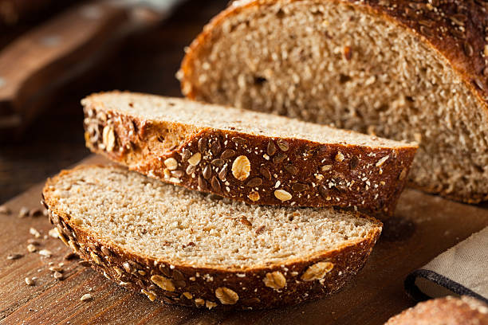

1. Wheat Flour (atta) - 1 kg
2. Eggs (well beaten) - 2
3. Molasses - 1 Cup
4. Curd - 1 Litre
5. Soda - 6 tsp
6. Salt - 2 tsp
1. Sift the flour and keep aside.
2. Combine the rest of the ingredients in a large bowl in the order given, and mix well.
3. Add the flour and blend thoroughly.
4. Leave to stand for 5 minutes.
5. Grease two large bread making tins and fill with the bread mixture till half full.
6. Bake in a moderate oven (350 deg F) for 1 hour.
7. Cool and tunr out.